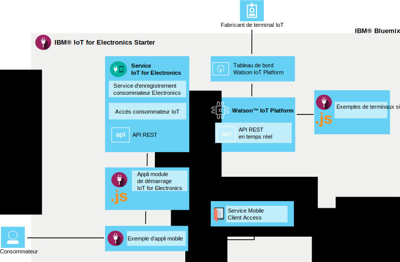

A propos de IoT for Electronics
Dernière mise à jour : 19 septembre 2016
IBM® IoT for Electronics est une instance de production IoT entièrement intégrée qui permet à vos applications de communiquer avec et de consommer des données collectées par vos appareils connectés, vos capteurs et vos passerelles.
IoT for Electronics fait appel au service IBM® Watson™ IoT Platform pour connecter vos appareils électroniques intelligents aux applications que vous développez. Il utilise également Watson IoT Platform pour faciliter l'analyse et la compréhension des données issues de vos appareils. Vous pouvez établir des règles identifiant des conditions nécessitant votre attention et définir des réponses automatisées, comme l'envoi d'un courrier électronique, l'exécution d'un flux de travaux Node-RED ou la connexion à des services Web.
Recherche du module de démarrage
Le module de démarrage IoT for Electronics se trouve dans la section Conteneurs boilerplate du catalogue Bluemix.
Fonctions d'IoT for Electronics
Découvrez rapidement les fonctions de la solution IoT for Electronics à l'aide d'appareils et de données simulés.
Connectez des appareils simulés
Créez des appareils simulés et connectez-les à la plateforme pour visualiser des flux de données en continu actifs. Utilisez une application Web pour simuler la réception de commandes et l'exécution d'opérations par un appareil. Imitez des échecs pour générer des détections et des alertes. Comme exemple, des lave-linges sont utilisés en tant qu'appareils simulés dans le module de démarrage IoT for Electronics. Vous pouvez connecter comme appareil n'importe quel type de terminal électronique intelligent.
Essayez une application mobile de consommateur exemple
Utilisez un téléphone iOS pour voir comment le propriétaire d'un appareil peut interagir avec ce dernier. Envoyez des commandes à l'appareil et recevez les mises à jour de l'appareil à l'aide de la plateforme et de Bluemix. Imitez des échecs et affichez les résultats dans l'application mobile.
Connectez vos propres appareils électroniques
Connectez vos propres appareils au cloud de manière sécurisée et commencez à personnaliser vos applications. Nous mettons à votre disposition un ensemble de recettes et d'exemple vérifiés que vous pouvez modifier et utiliser pour les démonstrations de faisabilité, les tests et l'expérimentation.
Contenu du module de démarrage IoT for Electronics
Le conteneur boilerplate du module de démarrage déploie la solution IoT for Electronics intégrée. Tous les composants sont liés et déployés automatiquement pour vous. Le module de démarrage vous permet d'explorer rapidement les fonctions de la solution grâce à des appareils et des données simulés. Le modèle d'application mobile vous indique comment un consommateur peut enregistrer et recevoir des alertes, et contrôler un appareil connecté. Vous pouvez vous servir des exemples comme points de départ pour la création de vos propres applications et collecter des données à partir de vos appareils. Les applications et services suivants sont inclus dans la solution :

Le module de démarrage IoT for Electronics utilise le service IoT for Electronics et des API pour se connecter à Watson IoT Platform. L'application de démarrage et le modèle d'application mobile communiquent avec le service IoT for Electronics et sont connectés entre eux par IBM® Mobile Client Access for Bluemix®. Les composants suivants sont inclus dans le module de démarrage :
Le service IoT for Electronics prend en charge l'enregistrement des utilisateurs et des appareils, ainsi que les notifications.
IBM® Watson™ IoT Platform permet à vos applications de communiquer avec vos appareils, capteurs et passerelles connectés et d'utiliser les données que ces derniers collectent.
IBM® Mobile Client Access for Bluemix® permet aux utilisateurs des applications mobiles de se connecter avec des comptes sociaux existants et garantit la sécurité des communications avec les systèmes dorsaux.
IBM® SDK for Node.js for Bluemix® vous permet de développer, déployer et mettre à l'échelle des applications JavaScript® côté serveur et fournit des performances, une sécurité et une serviçabilité améliorées.
Le modèle d'application mobile vous permet d'afficher le statut d'un appareil simulé et de communiquer avec ce dernier via votre téléphone iOS. Découvrez comment obtenir l'application mobile dans Utilisation de l'application mobile.
Liens connexes
Composants
- Documentation Watson™ IoT Platform
- Documentation IBM® Mobile Client Access for Bluemix®
- Documentation IBM® SDK for Node.js for Bluemix®